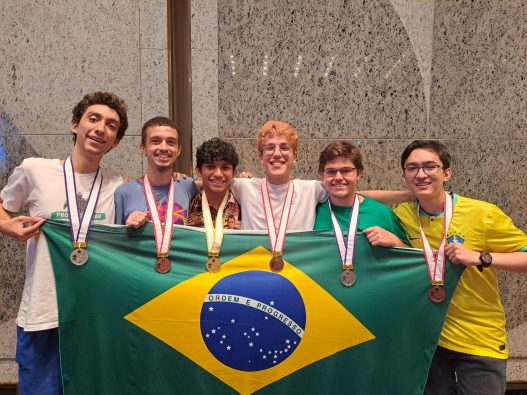

International Mathematical Olympiad (IMO)
A International Mathematical Olympiad (IMO) é a competição de matemática mais prestigiosa para estudantes de ensino médio de todo o mundo. Realizada anualmente, a IMO reúne os melhores jovens matemáticos de diversos países para um desafio que testa suas habilidades em resolução de problemas matemáticos avançados.
Como Funciona
A IMO é organizada pela International Mathematical Olympiad Federation (IMOF) e envolve as seguintes etapas:
- Seleção Nacional: Cada país participante realiza suas próprias competições nacionais para selecionar os representantes que irão para a IMO.
- Prova: A competição consiste em duas provas dissertativas, cada uma com 3 problemas que devem ser resolvidos em 4,5 horas. Os problemas cobrem uma gama de tópicos avançados em matemática.
- Premiação: Os participantes são avaliados e recebem medalhas de ouro, prata ou bronze com base nas suas pontuações. As melhores equipes também podem receber prêmios adicionais.
Os problemas da IMO são preparados para testar o pensamento crítico e a criatividade dos participantes, com foco em problemas desafiadores e inovadores.
Galeria
Medalhas
Premiação